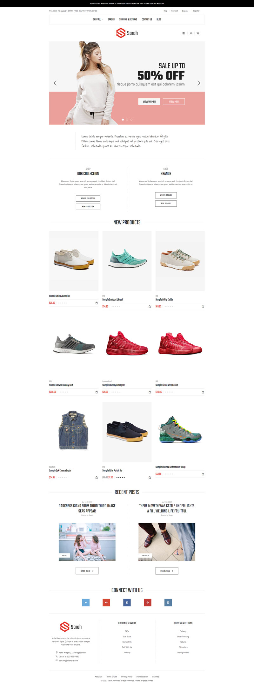
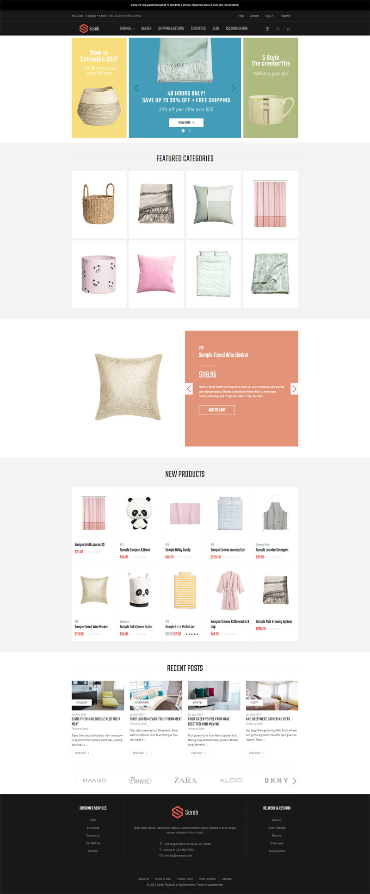

Quick Start Guide¶
Theme is customizable and editable via:
- Theme Editor
- Template files
- Language files
Theme Editor¶
This theme provides a powerful Theme Editor with many options let you change styles, colors, fonts and more.
To access the Theme Editor, go to your admin page > Storefront Design > My Themes, on the Current Theme section, click Customize button:

See the complete guide of Theme Editor in chapter Theme Settings.
Edit language file¶
Language files contains hard-coded static text, images and other links, which can be edited and translated to any languages.
To edit the language file, go to admin page > Storefront Design > My Themes, click button Advanced > Edit Theme Files of the current theme:

From the left navigation, click to edit the language file (e.i en.json):

Edit template files¶
Edit template files is not recommended, unless you have HTML, CSS and Sass programming skills.
You can edit the HTML files, SCSS files, images. However remember to backup your changed files as they are overwritten when you upgrade the theme.
To edit the template files, go to admin page > Storefront Design > My Themes, click button Advanced > Edit Theme Files of the current theme:
- All HTML files are in directory
templates. - All Sass files are in directory
assets / scss. - Images are placed in directory
assets / img.
Activate a theme style¶
To activate a theme style, open Theme Editor, find Styles section, click on the theme variation's thumbnail to activate corresponding style.

Theme includes 2 styles:
Default¶

LaParis II¶
